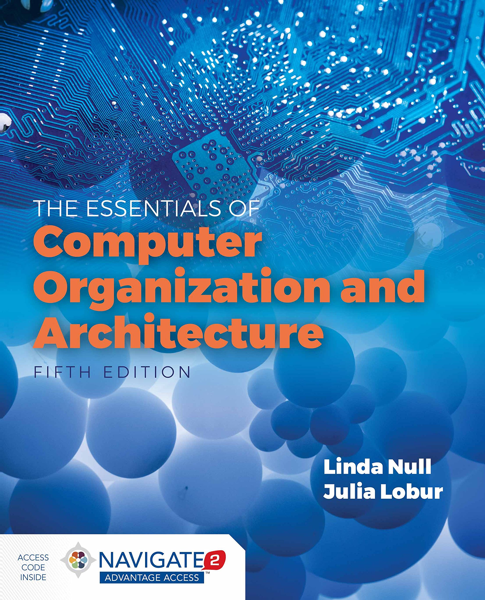
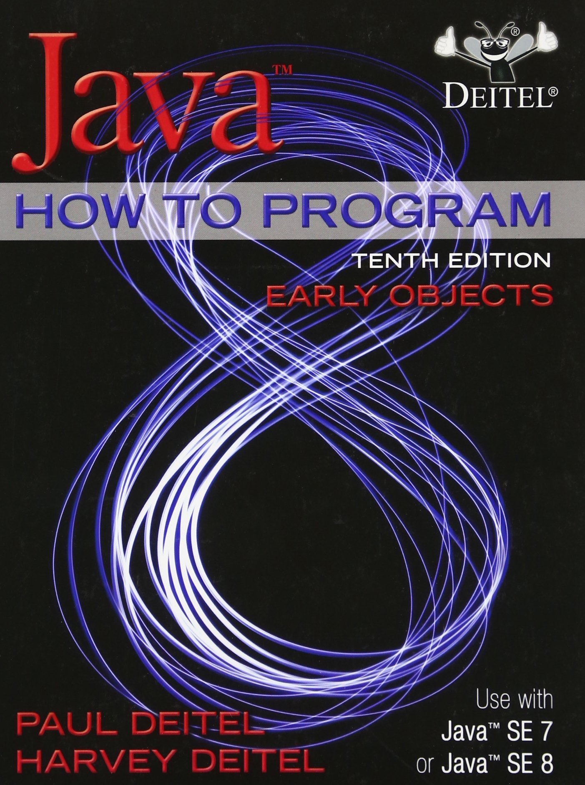
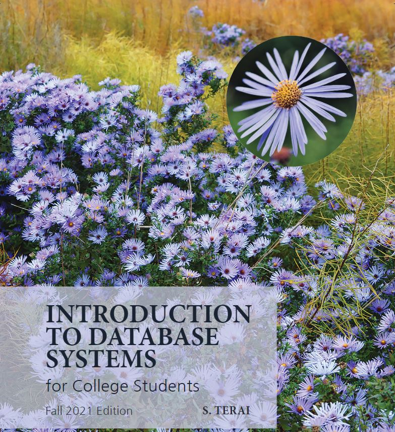
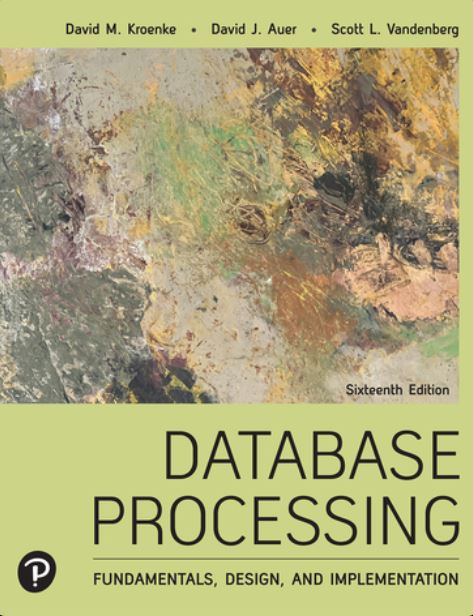

Courses I've Taken

Computer Programming - Level 01
Computer Essentials - CST8101
- The essentials of computer software, hardware, and laptop management form the foundation for building further technical programming skills

Computer Programming - Level 01
Introduction to Computer Programming - CST8116
- Possessing the fundamentals of logic, problem-solving and programming language structure provides a solid foundation for further study in the field.

Computer Programming - Level 01
Introduction to Database - CST8215
- Possessing the fundamentals of logic, problem-solving and programming language structure provides a solid foundation for further study in the field.
Computer Programming - Level 01
Achieving Success in Changing Environments - CST8300
- Rapid changes in technology have created personal and employment choices that challenge each of us to find our place as contributing citizens in the emerging society
Computer Programming - Level 01
Communications I - ENL1813T
- Communication remains an essential skill sought by employers, regardless of discipline or field of study.
- Using a practical, vocation-oriented approach, students focus on meeting the requirements of effective communication.
Computer Programming - Level 01
Technical Mathematics for Computer Science - MAT8001C
- The study of algebraic and transcendental functions is an essential prerequisite to Calculus.
- Students manipulate algebraic expressions, solve algebraic equations and linear systems and learn the properties of and graph algebraic and transcendental functions.

Computer Programming - Level 02
Database Systems - CST2355
- Database systems can automate data processing tasks as well as tie into the security of information technology systems.
- Students acquire practical experience using market-leading object-relational database management systems like Oracle and MySQL.

Computer Programming - Level 02
Operating System Fundamentals (GNU/Linux) - CST8102
- Operating systems form the backbone of information technology systems coordinating the interaction between hardware and software.
- Students explore the basic concepts and components of Operating Systems (OS), and how they function and interact with hardware and software components.

Computer Programming - Level 02
Object Oriented Programming (Java) - CST8284
- Working in the field of information technology as a programmer requires a firm understanding of Object-Oriented Programming (OOP) concepts.
- Students explore object-oriented programming methodology using the Java programming language.

Computer Programming - Level 02
Web Programming - CST8285
- The World Wide Web (WWW) has become an integrated part of everyday life.
- Students develop basic skills of web programming, website design and implementation. JavaScript, HTML5, and PHP are used to explore web-based solutions to problems of increasing interactivity and complexity.
Filter Options: